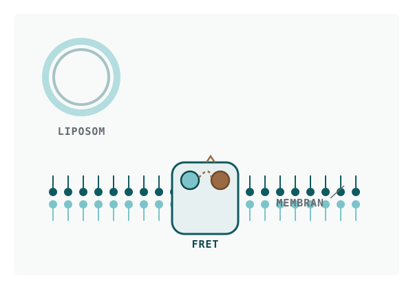

Forschungsfeld I · Biophysik
Crowding an Membranen sichtbar machen
Der Kern meines biophysikalischen Profils: Membran- und membranassoziierte Proteinkonstrukte exprimieren, reinigen und in definierte Modellmembranen einsetzen — und mit Fluoreszenz messen, was direkt an der Membranoberfläche passiert. In der Bachelorarbeit ging es darum, molekulares Gedränge (interfacial macromolecular crowding) an Membraninterfaces per FRET messbar zu machen.

Der wissenschaftliche Hintergrund
In einer Zelle ist es voll. Proteine, Lipide und gelöste Makromoleküle drängen sich dicht an dicht, besonders unmittelbar an Membranoberflächen. Dieses Gedränge — macromolecular crowding — ist kein Nebeneffekt, sondern beeinflusst, wie Proteine falten, binden und miteinander reagieren. Direkt an der Grenzfläche zwischen Membran und Wasser (dem interface) ist dieser Effekt besonders schwer zu messen, weil man ein Werkzeug braucht, das genau dort, in wenigen Nanometern Abstand, empfindlich ist.
Genau das leistet FRET (Förster-Resonanzenergietransfer). Zwei Fluorophore — ein Donor und ein Akzeptor — tauschen Energie strahlungsfrei aus, und zwar umso stärker, je näher sie beieinander liegen. FRET wirkt dadurch wie ein molekulares Lineal im Nanometerbereich. Verändert sich die Umgebung an der Membran, ändert sich der effektive Abstand oder die Ausrichtung der Fluorophore — und das Verhältnis der beiden Fluoreszenzsignale verschiebt sich messbar.
Um solche Effekte kontrolliert zu untersuchen, reicht die komplexe echte Zelle nicht. Man braucht synthetische Membransysteme mit bekannter Zusammensetzung:
- Liposomen — künstliche Membranbläschen, in die sich Proteine einbauen lassen.
- Nanodiscs — kleine, von einem Gerüstprotein (MSP) stabilisierte Membranscheiben, die einzelne Membranproteine in einer definierten Lipidumgebung präsentieren.
- Membranverankerte Sensoren — Konstrukte wie SecE-SpyCatcher, die das FRET-Paar gezielt an die Membran koppeln.
Was ich dort gemacht habe
Meine Aufgabe war es, FRET-basierte Sensoren für dieses Crowding zu charakterisieren — von der Herstellung der Proteine bis zur eigentlichen Messung. Das umfasste die gesamte Kette:
- Konstrukte herstellen — Expression in E. coli und Reinigung mehrerer sensorischer und membranverankerter Konstrukte, darunter FRET-Sensoren, SecE-SpyCatcher, das Gerüstprotein MSP sowie EmrE-basierte Varianten.
- In Modellmembranen einsetzen — Rekonstitution von SecE-SpyCatcher in Proteoliposomen und Nanodiscs, damit die Sensoren in einer definierten Membranumgebung sitzen.
- Crowding auslösen und messen — FRET-basierte Auswertung der Crowding-Effekte, unter anderem nach Zugabe von PEG5000 als Crowding-Agens, über Fluoreszenz-Emissionsspektren und das Verhältnis der Donor-/Akzeptor-Signale.
- Sauber abgrenzen — systematisches Screening der FRET-Konstrukte, um freie von gebundenen Sensoren zu unterscheiden — nur so lässt sich das Signal richtig interpretieren.
Ein roter Faden dabei war Troubleshooting und Protokolloptimierung. Proteinreinigung und Rekonstitution habe ich nicht nach Vorschrift abgearbeitet, sondern dort nachgeschärft, wo Ausbeute oder Reinheit nicht stimmten.
Schlüsselmethoden
Die Arbeit war methodisch breit und verband Molekularbiologie, Proteinbiochemie und Biophysik:
- Fluoreszenz & Biophysik: FRET-Spektroskopie, Fluoreszenz-Emissionsspektren, YFP/CFP-Ratio-Auswertung.
- Modellsysteme: Liposomen, Proteoliposomen, Nanodiscs, PEG5000-induziertes Crowding.
- Proteinbiochemie: E.-coli-Expression, Ni-NTA-Affinitätsreinigung, Größenausschlusschromatographie (ÄKTA/SEC), DDM-Solubilisierung, Ultrazentrifugation.
- Molekularbiologie: PCR, Gibson Assembly, Transformation, Sequenzierung.
- Analytik: SDS-PAGE, Coomassie, Fluoreszenzgel-Analyse.
Das Methodenfundament davor
Vorbereitet wurde diese Arbeit durch ein Forschungspraktikum am Lehrstuhl für Biochemie (Lutz Schmitt, 07–10/2020), in dem ich die lösliche Domäne von Akt1 kloniert, exprimiert und aufgereinigt habe. Das klingt nach einem Nebenschauplatz, war aber das proteinbiochemische Handwerk — Klonierung, heterologe Expression, Chromatographie —, auf dem die biophysikalische Arbeit überhaupt erst aufsetzen konnte.
Warum das hier steht
Dieses Feld zeigt, woher meine Arbeitsweise kommt: ein Signal erst dann glauben, wenn Kontrollen und Abgrenzungen stimmen, und Protokolle nicht als gegeben hinnehmen, sondern messbar verbessern. Dieselbe Haltung steckt heute in meinen Daten- und Automatisierungsprojekten — nur ist das Messsystem dort eine Pipeline statt eines Spektrometers.